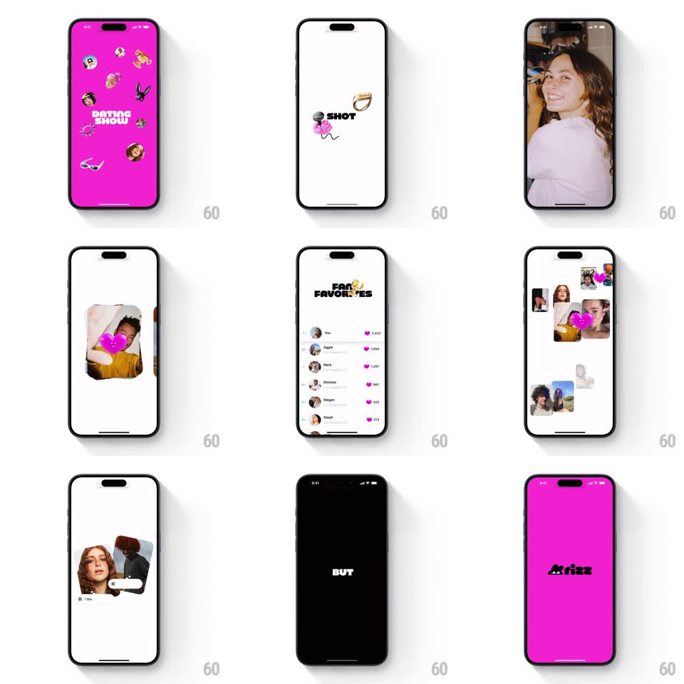

Media
Frame-by-frame

Rebuild this animation 1:1: Hoppy's splash - a magenta screen bursts with pop-art stickers around "DATING SHOW", then rapid-fire word cards on white ("SHOT", "NOTICED", "CLIMB", "YOUR", "BLIND") each with stickers, landing on the magenta "hoppy?" wordmark.

Rebuild this animation 1:1: Hoppy's splash - a magenta screen bursts with pop-art stickers around "DATING SHOW", then rapid-fire word cards on white ("SHOT", "NOTICED", "CLIMB", "YOUR", "BLIND") each with stickers, landing on the magenta "hoppy?" wordmark.
## Integration
Integration: stack-agnostic spec - springs given as stiffness/damping, timed motions as duration + curve; map every value to your framework and animation library of choice.
## Scene
Magenta full-bleed with a burst of pop-art stickers (faces, flower, bunny, sunglasses) around a bold "DATING SHOW" title; then a white background flashing single bold words with small sticker clusters (ring + mic + lips, muscle man + cake + star); final magenta frame with the black "hoppy?" wordmark.
## Motion spec
Pattern: rhythmic flash-card splash, ~2.2s total.
- Burst: stickers pop in around the title (scale 0 -> 1, spring ~420/16, 25ms stagger, 300ms total) with a slight rotation each (+-15deg).
- Flashes: each word card slams in (scale 1.2 -> 1 with a 100ms hit, 80ms opacity ramp) holds ~250ms, then cuts hard to the next - no crossfades.
- Stickers: each card's stickers spring in 40ms after its word (spring ~440/18).
- Landing: the last word cuts to magenta as "hoppy?" scales from 0.8 (spring ~360/16, 400ms) with one overshoot.
## Calibration
- Timing is rhythmic and fast - the cuts land like beats (~4 per second after the burst).
- Words are heavy-weight and centered; stickers sit at fixed offsets per card.
## Reduced motion
Cards fade (150ms each) in sequence; the logo fades in.
## Don't miss
- Hard cuts between words - any dissolve kills the rhythm.
- The magenta bookends: the sequence starts and ends on brand color.